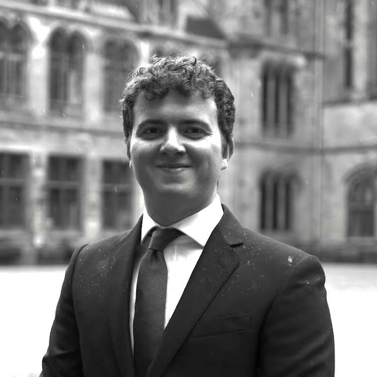

Adam Brierley MSc

Graduated from the University of Glasgow with a degree in Aeronautical Engineering 2020-2024.
In 2023, interned at a materials research lab at the University of Glasgow working on 3D-printed multi-functional materials.
In 2024, sold whisky over the best whisky bar in Glasgow and developed an interest in the whisky industry.
After graduating in Scotland, studied a master's degree in Computational Fluid Dynamics at Cranfield University 2024-2025, specialising in solvers for incompressible flows of fluid. Expected first classification equivalent pending thesis mark.